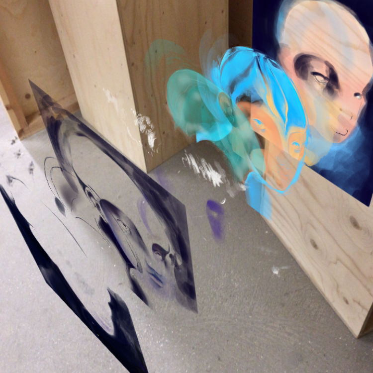
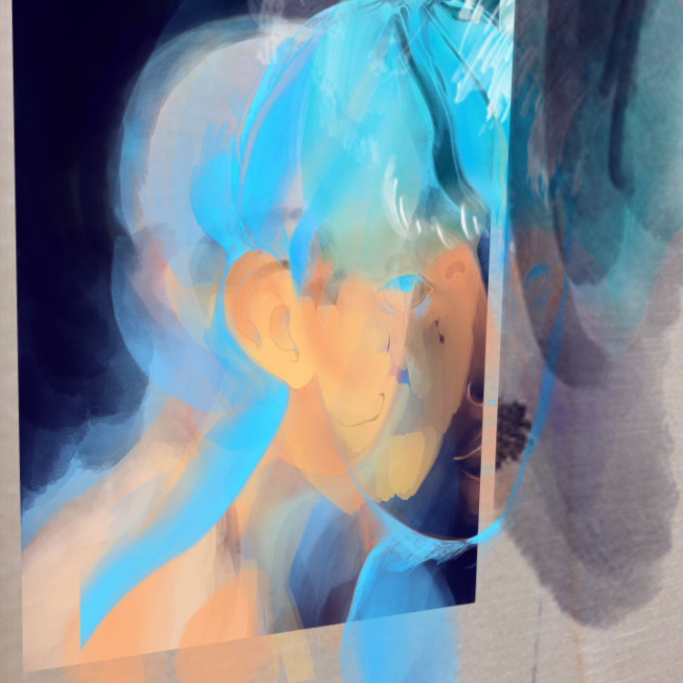

Unit 10 Part II
Week 01 | 11.01.18 - 18.01.18
Writing self-directed briefs


Research
Underlying structural differences between analogue and digital media
Digital format
Numbers
Circuits
Electricity
Amateur / Beginner participation
spontaneous, generative
non-linear
Analogue format
Letters
Human voice & voice
Energy through food
Performer / Actor / Specialist participation
practiced, planned
linear
Notes
Definition of word narrative: characters & drama → conclusion (a story)
Historical characteristics of a story / narrative: catharsis → participation through song / dance, physical exertion / (animal) sacrifice / reward, penalty
Characteristics
Definition of digital storytelling:
Series of connected dramatic events
Characters controlled by user / synthetically created through AI
Navigable → user has control / impact over specific aspects of story / change viewpoint of story
Immersive
Non-linear
Participatory → shared community experience
4th wall is broken → communicate directly with characters, blurring boundaries between fiction and reality
System of rewards and penalties, challenges, tasks
Large narrative canvas → use multiple media
Multisensory
Historical
Religious ceremonies: Multisensory narrative / experience → Baptism / Funeral / Wedding / ...
Rituals: Halloween / Christmas / Easter / New Year / ...
Communal activites: Sports events / Games / Hunting / ...
Roleplaying: Fairs / Cosplay / Conventions / Talk or Game shows / ...
Exercise
Take a fictional character from a movie, TV show or novel and list some ways that hypertext could be used to give a fuller picture of this individual.
Describe / analyse how the fourth wall is broken in a piece of traditional entertainment (poem, short story, novel, play, movie, TV show). Could it be done in a similar / more meaningful way with digital media / format?

Digital Storytelling
Carolyn Miller
Example of repurposing of familiar analogue concepts into digital space
No change, no value, no functionality has been added during the repurposing
Skeuomorphism must die! (2012) Case study
Ian Renton
New type of media
Hybrid between game and public video platform
Content, rules linked to blockchain technology → decisions determined by majority users
Invisible, malleable, unpredictable "storyline"
Integrated into daily life
Incentive for active participants vs passive invsible ones

Nerve (2016) Film
Ariel Schulman, Henry Joost
Non-linear analogue story
No dialogue, story through set design, movement of actor bodies, facial expression, background music and sound
Hotel with different rooms, visitors wear masks, can explore alone
Every visitor has unique experience, every visit is different

Sleep No More (2011) Play
Punchdrunk
Adding 3rd dimension to traditional 2d work
Adds explorability / discoverability aspect without cluttering work
Still experimental, what kind of value does it add? Mystery image, user must find something specific?
Experiment 30 (20xx) Comic
Yiwen Lin
Machine learning as immersive tool
Instead of Nic Cage's face user could choose characters / actors. Have main character look like themselves?
Deep learning tech used to put Nic Cage in every movie (2017) FakeApp
AV Club
Using live video feed as content for comic
A filter transforms a live video feed into rough sketch-like images and adds captions to it depending on how the software interprets the situation.
Flat New World (2014) Google DevArt
Cindy Sherman Bishop
Using human body movement as input to alter pre-existing images
Depending on how you tilt an image or at what altitude you hold it the shapes of the image change.

Ellsworth Kelly Animated (20xx) Google DevArt
Varun Vachhar
Using location coordinates as input to alter digital landscape
Depending on where you are standing while playing the game the landscape changes. It is generated by data gathered on your geographical location.
Journey of a Giant (20xx) Google DevArt
Yiwen Lin
Using motion to highlight music
Visual playground for viewer while listening to Dutch pianist Michiel Borstlap.

Frames (2016) Motion Graphics
Hora Studio
Experimentation
Sketching with code and images.
Trying to convey more information about experience in comparison with generic Facebook / Flickr album.
Using movement and text to show emotion.
Sketching with 3d objects.
Convey memories and information about CSM: What happened here (expressive → collectivey deposit and view memories)? Loking for something specific (navigational)?
How best to represent CSM? Logo? Building? Using AR markers and have user go around uni?


Sketching with AR content
How can AR add meaning to digital content? How does the story of the digital comic become more rich? Does it add value to the viewer if they can see how the content was created? Layers / Process of creation.

Original
AR version



Sketching with drawing machine
Printed matter becomes more personal if drawn by drawing machine using font created by own handwriting?
Week 04 | 08.02.18 - 15.02.18
Prototype crit